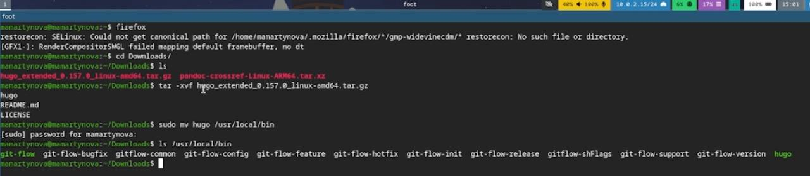
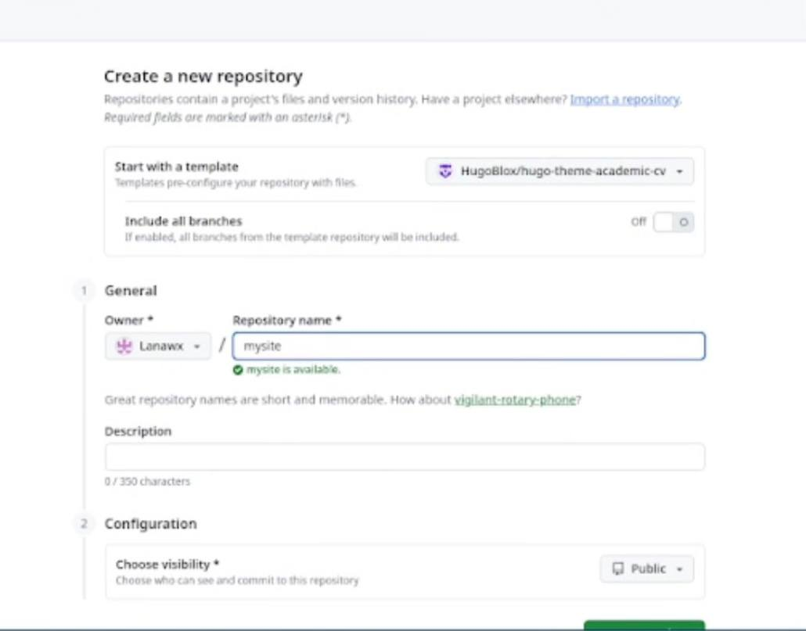
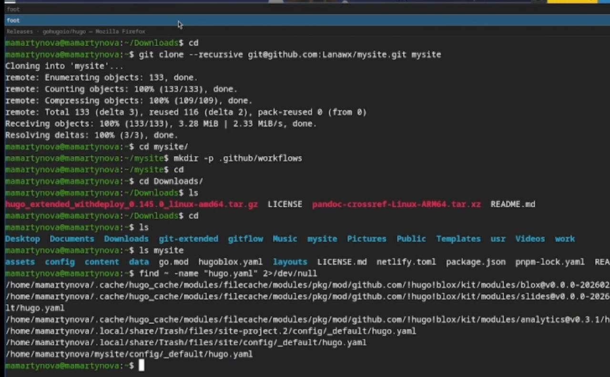
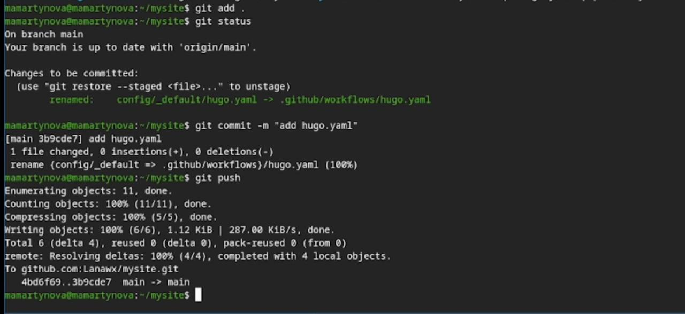
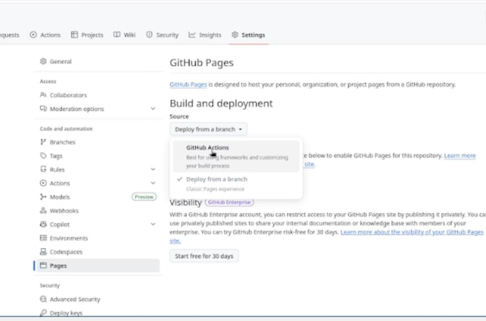
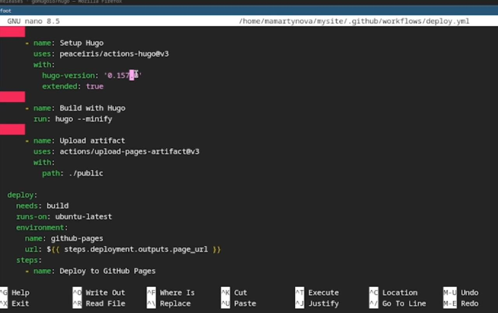
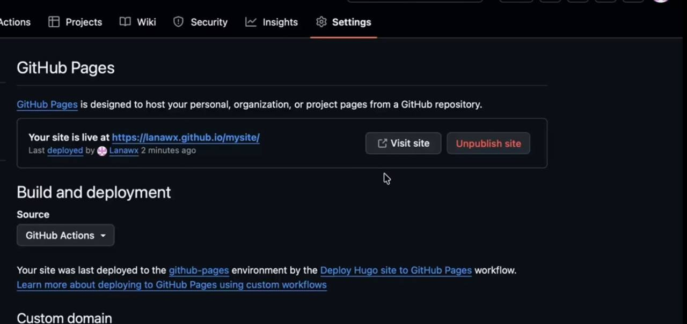

Научиться размещать свой сайт на Github pages. Выполнить первый этап индивидуального проекта.
Устанавливаю hugo на свою виртуальную машину и переношу исполняемый файл в директорию с пакетами. (рис. 1)

Создаю свой репозиторий для будущего сайта, используя шаблон.(рис. 2)

Клонирую репозиторий на свою машину и загружаю туда конфигурационный файл для сайта. (рис. 3)

Делаю снимок изменений, создаю коммит и отправляю изменения на github.(рис. 4)

В настройках репозитория указываю github actions.(рис. 5)

Исправляю код файла workflows, так как cайт не запустился. (рис. 6)

Теперь сайт появился.(рис. 7)

В ходе выполнения первого этапа индивидуального проекта мы научились размещать сайт на Github pages.